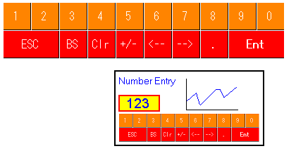

|
|
|
|
|
|
|
|
You can customize your keypad using one of these methods:
Ungroup a predefined keypad and rearrange individual keys.
Use blank and special keys.
You can change the order of the keys or add keys that are not available on a standard keypad. The following image shows a sample keypad created using Toolchest parts from the Keypad folder.

The following table describes the Keypad folder and its contents.
|
Folder |
Description |
|
Keypad |
Contains various predefined keypads. All keypads included here can be ungrouped and used as individual keys. The UppercaseStringKeypad and LowercaseStringKeypad Toolchest parts are designed for target machines with 20x20 touch areas; see Appendix 5, Hardware Specifications, for the targets that support 20x20 touch areas. |
|
Blank |
Contains keys for entering any character or number. |
|
SpecialKeys |
Contains keys that you can set up with a specific operation. For more information on the operations that you can assign to these keys, see Section 11.9.5.2, Using Blank and Special Keys. |